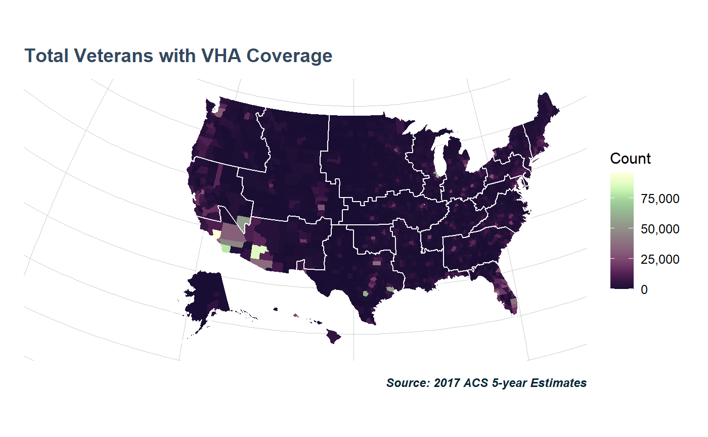
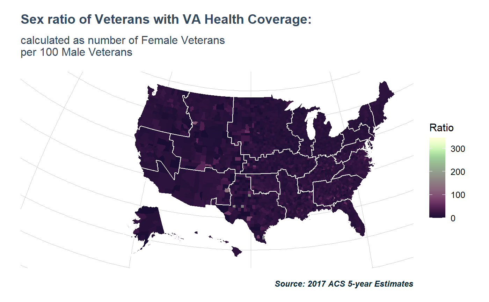

To get the most out of tidyVA, it is easiest to load the tidyverse. For fetching data from the Census API load tidycensus (this will require you first sign up for an API key).
library(ggplot2)
library(tidycensus)
library(dplyr)
#>
#> Attaching package: 'dplyr'
#> The following objects are masked from 'package:stats':
#>
#> filter, lag
#> The following objects are masked from 'package:base':
#>
#> intersect, setdiff, setequal, union
library(tidyVA)
data("county")
countyshift <- shift_geo(county)
#> Please note: Alaska and Hawaii are being shifted and are not to scale.VA Healthcare Coverage at the county-level
vars <- c(Male18to64 = "C27009_007E", Male65over = "C27009_010E",
Female18to64 = "C27009_017E", Female65over = "C27009_020E")
VAHC <- get_acs(geography = "county",
variables = vars,
output = "wide", year = 2017) %>%
mutate(TotalMale = Male18to64 + Male65over,
TotalFemale = Female18to64 + Female65over,
Total = TotalMale + TotalFemale)
#> Getting data from the 2013-2017 5-year ACS
VAHC <- tigris::geo_join(countyshift, VAHC,
by_sp = "FIPS", by_df = "GEOID")
data("visn")
visn <- visn %>%
shift_geo() %>%
group_by(VISN) %>%
summarise()
#> Please note: Alaska and Hawaii are being shifted and are not to scale.plot <- function(var){
ggplot() +
geom_sf(data = VAHC, aes(fill = var), color = NA) + #county layer
geom_sf(data = visn, fill = NA,
color = "#ffffff", size = .5) + #visn layer
scico::scale_fill_scico(labels = scales::comma,
palette = "tokyo") +
theme_va(map = TRUE) +
labs(caption = "Source: 2017 ACS 5-year Estimates",
fill = "Count")
}
plot(VAHC$Total) +
ggtitle("Total Veterans with VHA Coverage")
plot(VAHC$TotalFemale) +
ggtitle("Female Veterans with VHA Coverage",
subtitle = "Counts aggregated at the county-level")
Sex ratio in the population tends to be 1:1, but that’s not the case among Veterans.
ggplot() +
geom_sf(data = VAHC,
aes(fill = (TotalFemale/TotalMale)*100), color = NA) +
geom_sf(data = visn,
fill = NA, color = "#ffffff", size = .5) +
scico::scale_fill_scico(labels = scales::comma,
palette = "tokyo") +
labs(caption = "Source: 2017 ACS 5-year Estimates",
fill = "Ratio") +
ggtitle("Sex ratio of Veterans with VA Health Coverage:",
subtitle = "calculated as number of Female Veterans \nper 100 Male Veterans") +
theme_va(map = TRUE)
data("market")
proj <- sf::st_crs(visn)
market <- sf::st_transform(market,proj)
ggplot() +
geom_sf(data = VAHC[VAHC$VISN == "17",],
aes(fill = (TotalFemale/TotalMale)*100), color = NA) +
geom_sf(data = market[market$VISN == "17",],
fill = NA, color = "#ffffff", size = .5) +
scico::scale_fill_scico(labels = scales::comma,
palette = "tokyo") +
labs(caption = "Source: 2017 ACS 5-year Estimates \nGeography: Markets in VISN 17",
fill = "Ratio") +
ggtitle("Sex ratio of Veterans with VA Health Coverage:",
subtitle = "calculated as number of Female Veterans per 100 \nMale Veterans at the county-level") +
theme_va(map = TRUE, grid_col = "transparent")